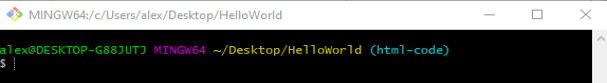
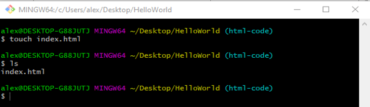

Making a local Repository
Making a folder
Before we can make a local repository we need to create a folder i made mine on desktop and called it HelloWorld.

Opening bash
Right click on folder and choose – git bash here to open a git bash window. This saves you having to open a bash window and navigate to your folder as it is already there.
Making a file with touch
Now we can create a new file called index.html using touch.
We can see this file has now appeared in our folder in File Explorer.

Or We can use ls in bash to list the files in our directory.
Making a file with nano
We could also have created a file using nano instead, nano allows you to add content to your file.
Ctrl x to escape nano.
Y or N to save changes or not.
And enter to go back to bash.
This looks the same as when we used touch to create a file but by using nano we have created a file and added content as well.

In File Explorer the file size has grown from 0 to 1KB.
And in Chrome it looks like this.
Adding git
To initialize this folder as a git repository (to put git in this folder) use $git init.
you cant see it in File Explorer because it is a hidden file.
Although you can change the settings to show hidden files using view then options folder if you want to see it. It would appear as .git (I’m not going to do that. If you can't see it you can't accidentally delete it).
Before git will track our changes we need to stage our files and commit them.
Home Stage and Commit